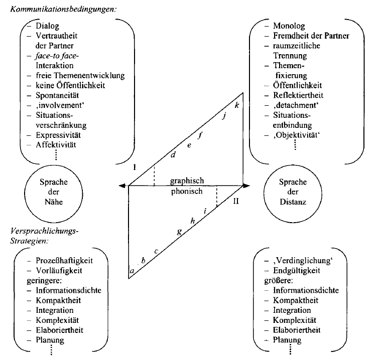
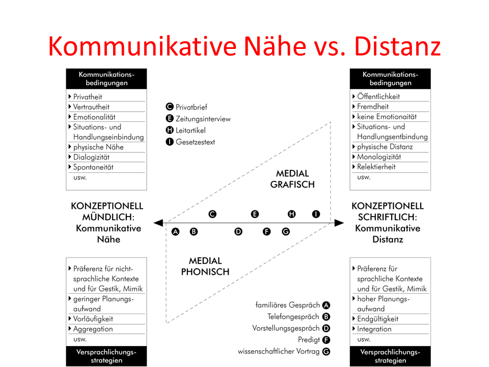
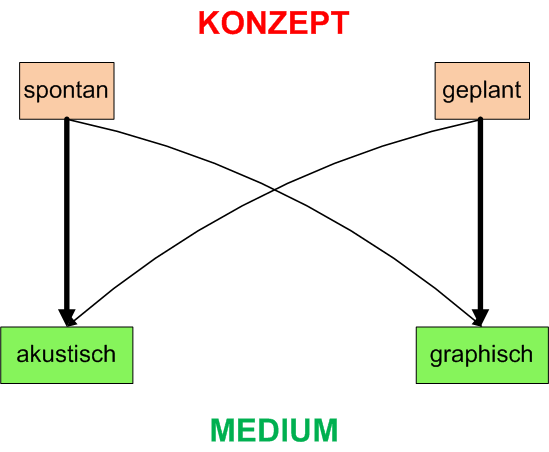
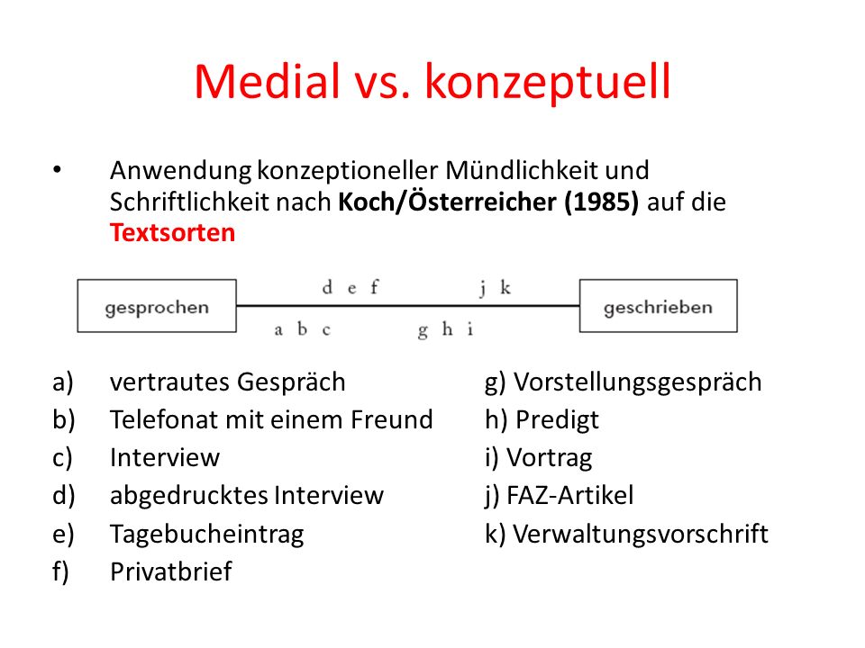

4 Nähe- und Distanzsprachlichkeit
Texte können Merkmale sowohl des gesprochenen als auch des geschriebenen Sprachstils aufweisen. Die Merkmalsmischung hängt von Nähe- oder Distanzbedingungen der Kommunikation ab, welche die jeweiligen Pole eines Kontinuums darstellen. Die Kommunikationsbedingungen können entlang mehrerer semiotischer Skalen betrachtet und bewertet werden. - Koch & Österreicher 1990, Lindenlaub 2003, Petrič 1998):
- physische Nähe vs. Distanz
- soziale Nähe vs. Distanz (Alter, Status, Geschlecht, Beruf, …)
- vertraut vs. fremd oder unbekannt
- private vs. öffentliche Produktion oder Rezeption
- emotional involviert vs. emotional distanziert
- Bezug auf die Situation des Sprechers (ich - hier - jetzt) vs. kein Bezug
- spontaner vs. vorbereiteter oder geplanter Kommunikationsakt
- Dialog vs. Monolog …

Unterschieden werden zwei verschiedene Ebenen:
- eine mediale (graphische, phonische, auditive) und
- eine konzeptionelle Ebene (die nach unserer Auffassung die vorsprachliche Planung des Kommunikationsakts betrifft).
Die Merkmale von Texten lassen sich zwischen den Endpolen von kontinuierlichen Nähe-Distanz-Skalen einordnen, so dass Texte entweder konzeptionell mündlich oder konzeptionell schriftlich sein können, und zwar ohne Rücksicht auf das Medium, welches der Übertragung des Botschaft dient.
Je nach Nähe- oder Distanzbedingungen der Kommunikation sind unterschiedliche sprachliche Strategien zu erwarten.

Konzeptionell schriftliche Texte werden in der Regel unter Distanzbedingungen produziert und kommen am häufigsten in schriftlichen Medien vor (wenn auch nicht ausschließlich).
Konzeptionell mündliche Texte werden in der Regel unter Bedingungen der Nähe produziert und kommen am häufigsten in mündlichen Medien vor (wenn auch nicht ausschließlich).

Daher können wir in bestimmten Texten eher eine Reihe von sprachlichen Strategien erwarten, die eher für den konzeptuell schriftlichen Stil typisch sind (produziert unter Distanzbedingungen), in anderen Texttypen dagegen eher eine Reihe von sprachlichen Strategien, die eher für den konzeptuell mündlichen Stil typisch sind (oft, aber nicht ausschließlich, unter Nähebedingungen).

Anhand von zwei Kommunikationsformen im folgenden Beispiel lässt sich der Unterschied zwischen konzeptueller Mündlichkeit / Schriftlichkeit und medialer Mündlichkeit und Schriftlichkeit verdeutlichen.
Eine Wettervorhersage im Fernsehen wird gewöhnlich gedanklich und schriftlich vorbereitet und geplant (konzeptuell schriftlich - der Text wird unter Distanzbedingungen produziert), aber dann wird der Text gewöhnlich von einem Bildschirm abgelesen und lautlich produziert (medial mündlich).
Ein Chat wird gewöhnlich nicht gedanklich und schriftlich vorbereitet und geplant, sondern zum Kommunikationszeitpunkt produziert (d.h. konzeputell mündlich), aber da die Kommunikationspartner räumlich entfernt sind, wird die Botschaft über eine Tastatur eingetippt (medial schriftlich).
Dieses Beispiel zeigt auch, dass konzeptuell schriftliche Texte nicht zwingend mit Hilfe des schriftlichen Mediums übertragen werden müssen und umgekehrt, dass konzeptuell mündliche Texte statt dess mündlichen Mediums auch das schriftliche Medium nutzen können. Dies hängt von den nähe- und distanzsprachlichen Kommunikationsbedingungen ab.
Kommunikationsform | mündl.Medium | schriftl.Medium | mündl.Konzept | schriftl.Konzept |
Chat | + | + | ||
Wettervorhersage im Fernsehen | + | + |